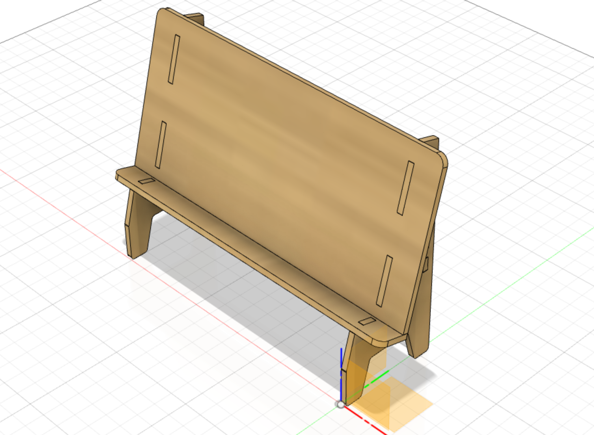

space
PARAMETRIC DESIGN - REASON
After I read the project description on Canvas, I decided to use this opportunity to design something that could, in some way, be useful to me. If I´m supposed to be fully honest, for the past few weeks I´ve been suffering from cervicalgia (e. neck pain), causing me extreme discomfort. The reason for this misfortune is the fact that often when I´m watching something on my iPhone or iPad, particularly while multitasking, I tend to look down at the device for a long period of time. It had been decided, I would use this project to terminate my cervicalgia. Marvelous. I will be using the render displayed in the following picture for reference, found after surfing the internet for a while. The model is a relatively simple construction, comprised of five parts. I headed into this journey hoping I could marginally improve my physical health.
PREPARATION
I didn´t really have any experience with CAD modelling using Fusion 360 so I decided to watch this video, the first one in a three-video series by Lars Christense. I found the series to be extremely informative, though admitting to not being focused to the fullest extent, during the last one. Furthermore, I decided to watch the videos provied by the supervisory teacher of this course, all present on the project´s description page on Canvas. I downloaded Fusion 360 for personal use off of their official page. Now the journey to my improved physical health had begun.
MODELLING
I started off by using the features of parametric modelling by creating some parameters so I could adapt my design to different use cases, if that would end up being the case. My original plan was to set them to the most logical values possible for this specific design. I didn´t want the model to be too small for a tablet, or to large for a phone. The parameters I created for this design are displayed in the following picture.
I began with sketching the legs on which the bottom panel, with support, would lay on, fully defining it using the parameters I created.
I then extruded the sketch to match the thickness of the 4 mm panels, created an offset plane using the parameter device_height from the origin plane, created another sketch on that offset plane and by using the project coming in I could select the face and create another sketch on that offset plane. Then I extruded and the two feet for the model were ready.
By simply creating a sketch on the bottom plane I could project a couple of faces of the legs, use my parameters for the extrusion and create a new body which lies on both of the legs.
I created a new component and did the exact same thing by sketching on the front face.
Now I wanted to create the support component of the model, connecting the base of both of the legs, preventing it from cracking when holding up my devices. I did that by creating a sketch on an offset plane exactly 5.0mm into the back face of the legs. I selected both of the faces and drew a rectangle, did the same for the the parts that needed to be extruded for the joints and a new body had been created.
Now I had to do some combine actions. I combined the target bodies, the legs, and the tool body, the support. I added some fillets and a nice appearance so the final assembly had been finalised.
While playing around in Fusion I noticed the animation workspace. I decided to give it a go. Not my proudest work, but it´s something.
CAM PREPARATION
Now I needed to set up my CAM, but it in a way that if I wanted to change my design I wouldn´t have to reset it. So it had to be set up for manufacturing in a way that it would be editable. The steps that I took are as follows:
1. Created a new component -> CAM..
2. Within that component, I created a new one -> Birchwood.
3. In Birchwood, I created a sketch on the ground plane.
4. Dimensioned it from the origin.
5. Extruded it using the parameter birchwood.
5. Activated the CAM assembly.
5. Created joints that would lay all of the components on the piece of „birchwood“.
5. Edited where the components would lay.
The result was as follows.
Now I needed to create toolpaths that I could export as a .dxf file and use on the laser cutter. I started off by creating the appropriate setup. I had to make a laser cut tool where I could set up the kerf width that would soon be adjusted according to the cutter I would use. The toolpaths would then be calculated as seen below.
For the post process, I installed the AutoCAD DXF post processor. I didn´t want the yellow lines seen above to be included in my file so I had to check the „only cutting“ tab, which was unchecked as default in the processor. I saved the file on my desktop and now I had a .dxf file that was ready for printing.
I used Inkscape to open my .dxf file, made minor tweaks to the settings; the canvas to 300x600mm, line width to 0.02, grouped every component as well as rearranging them.
CUTTING
With the assistance of the supervisory teacher of this course, things went smoothly. I had intended to document this whole process but somehow I did not. Really, the only thing I did was exporting my .dxf file as a .pdf to the laser cutter drive and the settings had been pre-set by a colleague of mine according to the laser cutter specific requirements. Downloaded from Google, unfortunately, but here´s an image of the cutter used for this process.
RESTORED PHYSICAL HEALTH
Since my model has been cut out and assembled in real life, which I´ve been using ever since, my cervicalgia has not seen the light of day.

The options are endless........